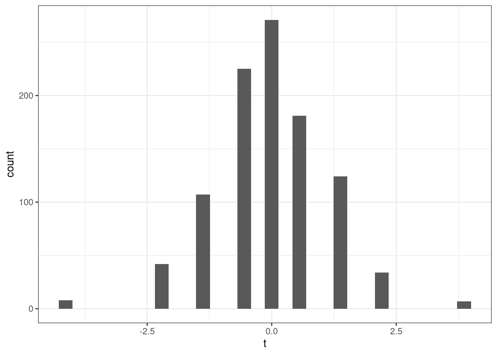
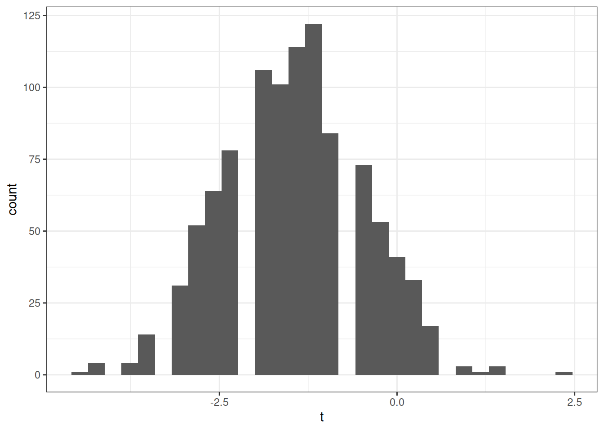
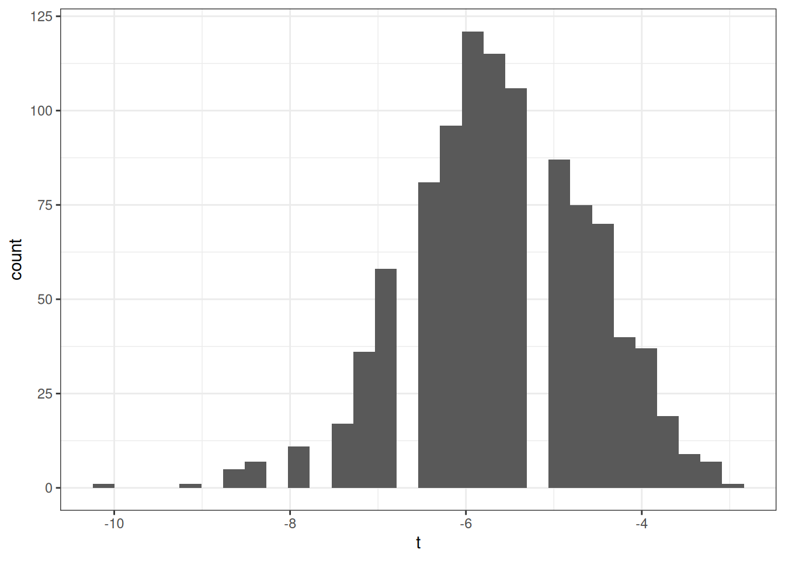
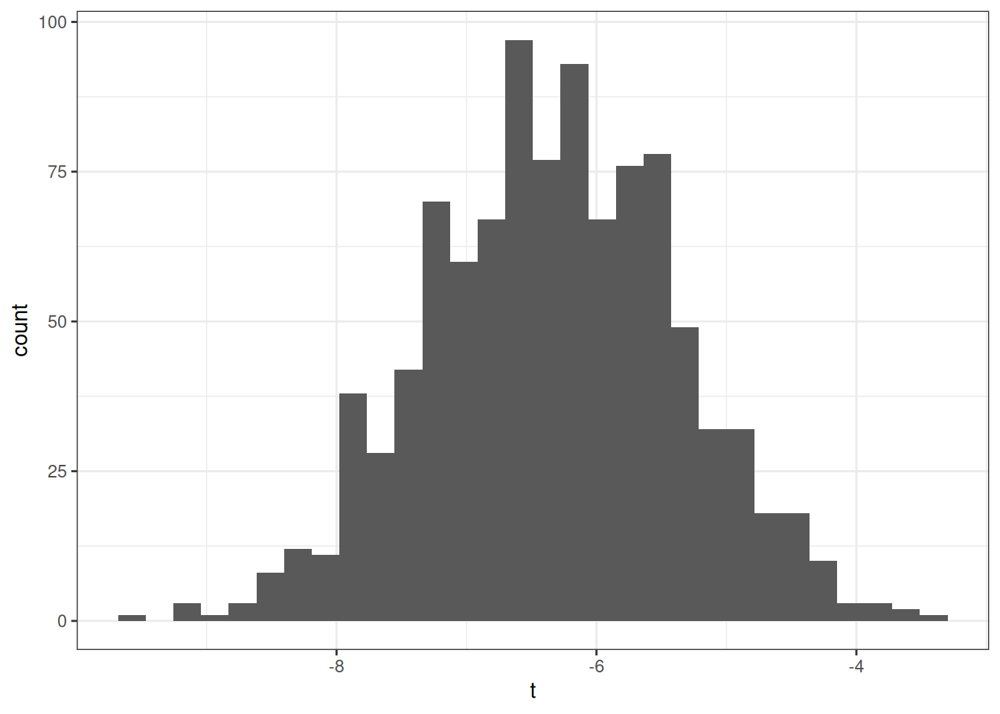
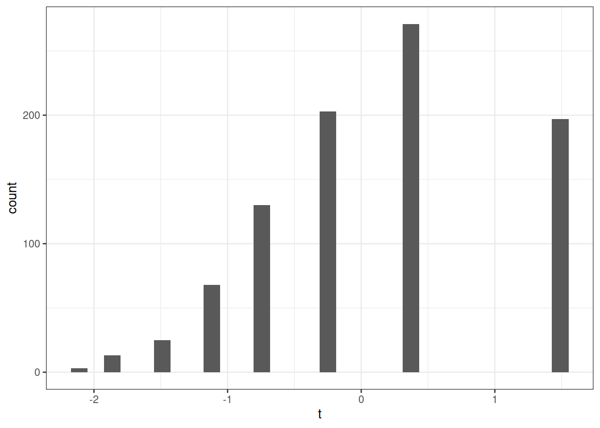
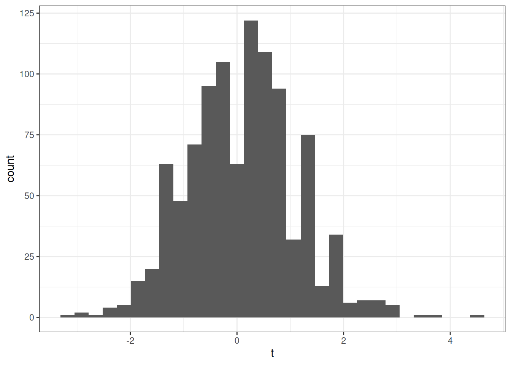

8 Inference
\[ \newcommand{\E}{\mathbb{E}} \renewcommand{\P}{\textrm{P}} \let\L\relax \newcommand{\L}{\textrm{L}} %doesn't work in .qmd, place this command at start of qmd file to use it \newcommand{\F}{\textrm{F}} \newcommand{\var}{\textrm{var}} \newcommand{\cov}{\textrm{cov}} \newcommand{\corr}{\textrm{corr}} \newcommand{\Var}{\mathrm{Var}} \newcommand{\Cov}{\mathrm{Cov}} \newcommand{\Corr}{\mathrm{Corr}} \newcommand{\sd}{\mathrm{sd}} \newcommand{\se}{\mathrm{s.e.}} \newcommand{\T}{T} \newcommand{\indicator}[1]{\mathbb{1}\{#1\}} \newcommand\independent{\perp \!\!\! \perp} \newcommand{\N}{\mathcal{N}} \]
8.1 Inference / Hypothesis Testing
SW 3.2, 3.3
Often in statistics/econometrics, we have some theory that we would like to test. Pretty soon, we will be interested in testing a theory like: some economic policy had no effect on some outcome of interest.
In this section, we’ll focus on the relatively simple case of conducting inference on \(\E[Y]\), but very similar arguments will apply when we try to start estimating more complicated things soon. Because we’re just focusing on \(\E[Y]\), the examples in this section may be a somewhat trivial/uninteresting, but I want us to learn some mechanics, and then we’ll be able to apply these in more complicated situations.
Let’s start with defining some terms.
Null Hypothesis This is the hypothesis (or theory) that we want to test. We’ll often write it in the following way
\[ H_0 : \E[Y] = \mu_0 \] where \(\mu_0\) is some actual number (e.g., 0 or 10 or just whatever coincides with the theory you want to test).
Alternative Hypothesis This is what is true if \(H_0\) is not. There are other possibilities, but I think the only alternative hypothesis that we will consider this semester is
\[ H_1 : \E[Y] \neq \mu_0 \] i.e., that \(\E[Y]\) is not equal to the particular value \(\mu_0\).
The key conceptual issue is that, even if the null hypothesis is true, because we estimate \(\E[Y]\) with a sample, it will generally be the case that \(\bar{Y} \neq \mu_0\). This is just the nature of trying to estimate things with a sample.
What we are going to go for is essentially trying to tell the difference (or at least be able to weigh the evidence) regarding whether the difference between \(\bar{Y}\) and \(\mu_0\) can be fully explained by sampling variation or that the difference is “too big” to be explained by sampling variation. Things will start to get “mathy” in this section, but I think it is helpful to just hold this high-level idea in your head as we go along.
Next, let’s define the standard error of an estimator. Suppose that we know that our estimator is asymptotically normal so that
\[ \sqrt{n}(\hat{\theta} - \theta) \rightarrow N(0,V) \quad \textrm{as } n \rightarrow \infty \] Then, we define the standard error of \(\hat{\theta}\) as
\[ \textrm{s.e.}(\hat{\theta}) := \frac{\sqrt{\hat{V}}}{\sqrt{n}} \] which is just the square root of the estimate of the asymptotic variance \(V\) divided by the square root of the sample size. For example, in the case where we are trying to estimate \(\E[Y]\), recall that, by the CLT, \(\sqrt{n}(\bar{Y} - \E[Y]) \rightarrow N(0,V)\) where \(V=\Var(Y)\), so that
\[
\textrm{s.e.}(\bar{Y}) = \frac{\sqrt{\widehat{\Var}(Y)}}{\sqrt{n}}
\] where \(\widehat{\Var}(Y)\) is just an estimate of the variance of \(Y\), i.e., just run var(Y) in R.
Over the next few sections, we are going to consider several different way to conduct inference (i.e., weigh the evidence) about some theory (i.e., the null hypothesis) using the data that we have. For all of the approaches that we consider below, the key ingredients are going to an estimate of the parameter of interest (e.g., \(\bar{Y}\)), the value of \(\mu_0\) coming from the null hypothesis, and the standard error of the estimator.
8.2 t-statistics
A t-statistic is given by
\[ t = \frac{\sqrt{n} (\bar{Y} - \mu_0)}{\sqrt{\hat{V}}} \] Alternatively (from the definition of standard error), we can write
\[ t = \frac{(\bar{Y} - \mu_0)}{\textrm{s.e.}(\bar{Y})} \] though I’ll tend to use the first expression, just because I think it makes the arguments below slightly more clear.
Notice that \(t\) is something that we can calculate with our available data. \(\sqrt{n}\) is the square root of the sample size, \(\bar{Y}\) is the sample average of \(Y\), \(\mu_0\) is a number (that we have picked) coming from the null hypothesis, and \(\hat{V}\) is the sample variance of \(Y\) (e.g., computed with var(Y) in R).
Now, here is the interesting thing about t-statistics. If the null hypothesis is true, then
\[ t = \frac{\sqrt{n} (\bar{Y} - \E[Y])}{\sqrt{\hat{V}}} \approx \frac{\sqrt{n} (\bar{Y} - \E[Y])}{\sqrt{V}} \]
where we have substituted in \(\E[Y]\) for \(\mu_0\) (due to \(H_0\) being true) and then replaced \(\hat{V}\) with \(V\) (which holds under the law of large numbers). This is something that we can apply the CLT to, and, in particular, if \(H_0\) holds, then \[ t \rightarrow N(0,1) \] That is, if \(H_0\) is true, then \(t\) should look like a draw from a normal distribution.
Now, let’s think about what happens when the null hypothesis isn’t true. Then, we can write
\[ t = \frac{\sqrt{n} (\bar{Y} - \mu_0)}{\sqrt{\hat{V}}} \] which is just the definition of \(t\), but something different will happen here. In order for \(t\) to follow a normal distribution, we need \((\bar{Y} - \mu_0)\) to converge to 0. But \(\bar{Y}\) converges to \(\E[Y]\), and if the null hypothesis does not hold, then \(\E[Y] \neq \mu_0\) which implies that \((\bar{Y} - \mu_0) \rightarrow (\E[Y] - \mu_0) \neq 0\) as \(n \rightarrow \infty\). It’s still the case that \(\sqrt{n} \rightarrow \infty\). Thus, if \(H_0\) is not true, then \(t\) will diverge (recall: this means that it will either go to positive infinity or negative infinity depending on the sign of \((\E[Y] - \mu_0)\)).
This gives us a very good way to start to think about whether or not the data is compatible with our theory. For example, suppose that you calculate \(t\) (using your data and under your null hypothesis) and that it is equal to 1. 1 is not an “unusual” looking draw from a standard normal distribution — this suggests that you at least do not have strong evidence from data against your theory. Alternatively, suppose that you calculate that \(t=-24\). While its technically possible that you could draw \(-24\) from a standard normal distribution — it is exceedingly unlikely. We would interpret this as strong evidence against the null hypothesis, and it should probably lead you to “reject” the null hypothesis.
We have talked about some clear cases, but what about the “close calls”? Suppose you calculate that \(t=2\). Under the null hypothesis, there is about a 4.6% chance of getting a t-statistic at least this large (in absolute value). So…if \(H_0\) is true, this is a fairly unusual t-statistic, but it is not extremely unusual. What should you do?
Before we decide what to do, let’s introduce a little more terminology regarding what could go wrong with hypothesis testing. There are two ways that we could go wrong:
Type I Error — This would be to reject \(H_0\) when \(H_0\) is true
Type II Error — This would be to fail to reject \(H_0\) when \(H_0\) is false
Clearly, there is a tradeoff here. If you are really concerned with type I errors, you can be very cautious about rejecting \(H_0\). If you are very concerned about type II errors, you could aggressively reject \(H_0\). The traditional approach to trading these off in statistics is to pre-specify a significance level indicating what percentage of the time you are willing to commit a type I error. Usually the significance level is denoted by \(\alpha\) and the most common choice of \(\alpha\) is 0.05 and other common choices are \(\alpha=0.1\) or \(\alpha=0.01\). Then, good statistical tests try to make as few type II errors as possible subject to the constraint on the rate of type I errors.
Often, once you have specified a significance level, it comes with a critical value. The critical value is the value of a test statistic for which the test just rejects \(H_0\).
In practice, this leads to the following decision rule:
Reject \(H_0\) if \(|t| > c_{1-\alpha}\) where \(c_{1-\alpha}\) is the critical value corresponding to the significance level \(\alpha\).
Fail to reject \(H_0\) if \(|t| < c_{1-\alpha}\)
In our case, since \(t\) follows a normal distribution under \(H_0\), the corresponding critical value (when \(\alpha=0.05\)) is 1.96. In particular, recall what the pdf of a standard normal random variable looks like
The sum of the two blue, shaded areas is 0.05. In other words, under \(H_0\), there is a 5% chance that, by chance, \(t\) would fall in the shaded areas. If you want to change the significance level, it would result in a corresponding change in the critical value so that the area in the new shaded region would adjust too. For example, if you set the significance level to be \(\alpha=0.1\), then you would need to adjust the critical value to be 1.64, and if you set \(\alpha=0.01\), then you would need to adjust the critical value to be 2.58.
8.3 P-values
Choosing a significance level is somewhat arbitrary. What did we choose 5%?
Perhaps more importantly, we are essentially throwing away a lot of information if we are to reduce the information from standard errors/t-statistics to a binary “reject” or “fail to reject”.
One alternative is to report a p-value. A p-value is the probability of observing a t-statistic as “extreme” as we did if \(H_0\) were true.
Here is an example of how to calculate a p-value. Suppose we calculate \(t=1.85\). Then,
Then, under \(H_0\), the probability of getting a t-statistic “as extreme” as 1.85 corresponds to the area of the two shaded regions above. In other words, we need to to compute
\[ \textrm{p-value} = \P(Z \leq -1.85) + \P(Z \geq 1.85) \] where \(Z \sim N(0,1)\). One thing that is helpful to notice here is that, a standard normal random variable is symmetric. This means that \(\P(Z \leq -1.85) = \P(Z \geq 1.85)\). We also typically denote the cdf of a standard normal random variable with the symbol \(\Phi\). Thus,
\[
\textrm{p-value} = 2 \Phi(-1.85)
\] I don’t know what this is off the top of my head, but it is easy to compute from a table or using R. In R, you can use the function pnorm — here, the p-value is given by 2*pnorm(-1.85) which is equal to 0.064.
More generally, if you calculate a t-statistic, \(t\), using your data and under \(H_0\), then,
\[ \textrm{p-value} = 2 \Phi(-|t|) \]
8.4 Confidence Interval
Another idea is to report a \((1-\alpha)\%\) (e.g., 95%) confidence interval.
The interpretation of a confidence interval is a bit subtle. It is this: if we collected a large number of samples, and computed a confidence interval each time, 95% of these would contain the true value. This is subtly different than: there is a 95% probability that \(\theta\) (the population parameter of interest) falls within the confidence interval — this second interpretation doesn’t make sense because \(\theta\) is non-random.
A 95% confidence interval is given by
\[ CI_{95\%} = \left[\hat{\theta} - 1.96 \ \textrm{s.e.}(\hat{\theta}), \hat{\theta} + 1.96 \ \textrm{s.e.}(\hat{\theta})\right] \]
For the particular case where we are interested in \(\E[Y]\), this becomes
\[ CI_{95\%} = \left[ \bar{Y} - 1.96 \ \textrm{s.e.}(\bar{Y}), \bar{Y} + 1.96 \ \textrm{s.e.}(\bar{Y}) \right] \]
8.5 Inference in Practice
I have covered the main approaches to inference in this section. I’d like to make a couple of concluding comments. First, all of the approaches discussed here (standard errors, t-statistics, p-values, and confidence intervals) are very closely related (in some sense, they are just alternative ways to report the same information). They all rely heavily on establishing asymptotic normality of the estimate of the parameter of interest — in fact, this is why we were interested in asymptotic normality in the first place. My sense is that the most common thing to report (at least in economics) is an estimate of the parameter of interest (e.g., \(\hat{\theta}\) or \(\bar{Y}\)) along with its standard error. If you know this information, you (or your reader) can easily compute any of the other expressions that we’ve considered in this section.
Another important thing to mention is that there is often a distinction between statistical significance and economic significance.
In the next chapter, we’ll start to think about the effect of one variable on another (e.g., the effect of some economic policy on some outcome of interest). By far the most common null hypothesis in this case is that “the effect” is equal to 0. However, in economics/social sciences/business applications, there probably aren’t too many cases where (i) it would be interesting enough to consider the effect of one variable on another (ii) while simultaneously the effect is literally equal to 0. Since, all else equal, standard errors get smaller with more observations, as datasets in economics tend to get larger over time, we tend to find more statistically significant effects. This doesn’t mean that effects are getting bigger or more important — just that we are able to detect smaller and smaller effects if we have enough data. And most questions in economics involve more than just answering the binary question: does variable \(X\) have any effect at all on variable \(Y\)? For example, if you are trying to evaluate the effect of some economic policy, it is usually more helpful to think in terms of a cost-benefit analysis — what are the benefits or the policy relative to the costs and these sorts of comparisons inherently involve thinking about magnitudes of effects.
A more succinct way to say all this is: the effect of one variable on another can be both “statistically significant” and “economically” small at the same time. Alternatively, if you do not have much data or the data is very “noisy”, it may be possible that there are relatively large effects, but that the estimates are not statistically significant (i.e., you are not able to detect them very well with the data that you have). Therefore, it is important to not become too fixated on statistical significance and to additionally think carefully about the magnitudes of estimates.
8.6 Coding
In this section, we’ll use the acs data to calculate an estimate of average wage/salary income among employed individuals in the United States. We’ll test the null hypothesis that the mean income in the United States is $50,000 as well as report the standard error of our estimate of mean income, as well as corresponding p-values, t-statistics, and 95% confidence interval. Finally, we’ll report a table of summary statistics using the modelsummary package separately by college graduates relative to non-college graduates.
load("data/acs.RData")
# estimate of mean income
ybar <- mean(acs$incwage)
ybar[1] 59263.46# calculate standard error
V <- var(acs$incwage)
n <- nrow(acs)
se <- sqrt(V) / sqrt(n)
se[1] 713.8138# calculate t-statistic
t_stat <- (ybar - 50000) / se
t_stat[1] 12.97742This clearly exceeds 1.96 (or any common critical value) which implies that we would reject the null hypothesis that mean income is equal to $50,000.
# calculate p-value
p_val <- 2*pnorm(-abs(t_stat))The p-value is essentially equal to 0. This is expected given the value of the t-statistic that we calculated earlier.
# 95% confidence interval
ci_L <- ybar - 1.96*se
ci_U <- ybar + 1.96*se
paste0("[",round(ci_L,1),",",round(ci_U,1),"]")[1] "[57864.4,60662.5]"library(modelsummary)`modelsummary` 2.0.0 now uses `tinytable` as its default table-drawing
backend. Learn more at: https://vincentarelbundock.github.io/tinytable/
Revert to `kableExtra` for one session:
options(modelsummary_factory_default = 'kableExtra')
options(modelsummary_factory_latex = 'kableExtra')
options(modelsummary_factory_html = 'kableExtra')
Silence this message forever:
config_modelsummary(startup_message = FALSE)library(dplyr)
Attaching package: 'dplyr'The following objects are masked from 'package:stats':
filter, lagThe following objects are masked from 'package:base':
intersect, setdiff, setequal, union# create a factor variable for going to college
acs$col <- ifelse(acs$educ >= 16, "college", "non-college")
acs$col <- as.factor(acs$col)
acs$female <- 1*(acs$sex==2)
acs$incwage <- acs$incwage/1000
datasummary_balance(~ col, data=dplyr::select(acs, incwage, female, age, col),
fmt=2)| college (N=3871) | non-college (N=6129) | |||||
|---|---|---|---|---|---|---|
| Mean | Std. Dev. | Mean | Std. Dev. | Diff. in Means | Std. Error | |
| incwage | 89.69 | 96.15 | 40.05 | 39.01 | -49.65 | 1.62 |
| female | 0.51 | 0.50 | 0.46 | 0.50 | -0.04 | 0.01 |
| age | 44.38 | 13.43 | 42.80 | 15.71 | -1.58 | 0.29 |
8.7 Lab 3: Monte Carlo Simulations
In this lab, we will study the theoretical properties of the estimators that we have been discussing in this chapter.
Monte Carlo simulations are a useful way to study/understand the properties of an estimation procedure. The basic idea is that, instead of using real data, we are going to use simulated data where we control the data generating process. This will be useful for two reasons. First, we will know what the truth is and compare results coming from our estimation procedure to the truth. Second, because we are simulating data, we can actually carry out our thought experiment of repeatedly drawing a sample of some particular size.
For this lab, we are going to make simulated coin flips.
Write a function called
flipthat takes in an argumentpwherepstands for the probability of flipping a heads (you can code this as a1and0for tails) and outputs either1or0. Run the codeflip(0.5)Hint: It may be helpful to use the
Rfunctionsample.Write a function called
generate_samplethat takes in the argumentsnandpand generates a sample ofncoin flips where the probability of flipping heads isp. Run the codegenerate_sample(10,0.5)Next, over 1000 Monte Carlo simulations (i.e., do the following 1000 times),
generate a new sample with 10 observations
calculate an estimate of \(p\)
(Hint: you can estimate \(p\) by just calculating the average number of heads flipped in a particular simulation)
a t-statistic for the null hypothesis that \(p=0.5\)
and record whether or not you reject the null hypothesis that \(p=0.5\) in that simulation
Then, using all 1000 Monte Carlo simulations, report (i) an estimate of the bias of your estimator, (ii) an estimate of the variance of your estimator, (iii) an estimate of the mean squared error of your estimator, (iv) plot a histogram of the t-statistics across iterations, and (v) report the fraction of times that you reject \(H_0\).
Same as #3, but with 50 observations in each simulation. What differences do you notice?
Same as #3, but with 50 observations and test \(H_0:p=0.6\). What differences do you notice?
Same as #3, but with 50 observations and test \(H_0:p=0.9\). What differences do you notice?
Same as #3, but with 1000 observations and test \(H_0:p=0.6\). What differences do you notice?
Same as #3, but now set \(p=0.95\) (so that this is an unfair coin that flips heads 95% of the time) and with 10 observations and test \(H_0:p=0.95\). What differences do you notice?
Same as #8, but with 50 observations. What differences do you notice?
Same as #8, but with 1000 observations. What differences do you notice?
Hint: Since problems 3-10 ask you to do roughly the same thing over and over, it is probably useful to try to write a function to do all of these but with arguments that allow you to change the number of observations per simulation, the true value of \(p\), and the null hypothesis that you are testing.
8.8 Lab 3 Solutions
# function to flip a coin with probability p
flip <- function(p) {
sample(c(0,1), size=1, prob=(c(1-p,p)))
}
# test out flip function
flip(0.5)[1] 1# function to generate a sample of size n
generate_sample <- function(n,p) {
Y <- c()
for (i in 1:n) {
Y[i] <- flip(p)
}
Y
}
# test out generate_sample function
generate_sample(10,0.5) [1] 0 1 1 0 0 1 0 1 1 0# carry out monte carlo simulations
n <- 10
p <- 0.5
nsims <- 1000 # need to pick large number of monte carlo simulations
mc_est <- c() # vector to hold estimation results
mc_var <- c() # vector to hold estimated variance
for (i in 1:nsims) {
Y <- generate_sample(n,p)
mc_est[i] <- mean(Y)
mc_var[i] <- var(Y)
}
# compute bias
bias <- mean(mc_est) - p
bias[1] 0.0016# compute sampling variance
var <- var(mc_est)
var[1] 0.02414158# compute mean squared error
mse <- bias^2 + var
mse[1] 0.02414414H0 <- p
t <- sqrt(n)*(mc_est - H0) / sqrt(mc_var)
ggplot(data.frame(t=t), aes(x=t)) +
geom_histogram(bins=30) +
theme_bw()Warning: Removed 1 row containing non-finite outside the scale range
(`stat_bin()`).
rej <- mean(1*(abs(t) >= 1.96))
rej[1] 0.103# since we are going to do this over and over, let's write a function to do it
mc_sim <- function(n, p, H0) {
mc_est <- c() # vector to hold estimation results
mc_var <- c() # vector to hold estimated variance
for (i in 1:nsims) {
Y <- generate_sample(n,p)
mc_est[i] <- mean(Y)
mc_var[i] <- var(Y)
}
# compute bias
bias <- mean(mc_est) - p
# compute sampling variance
var <- var(mc_est)
# compute mean squared error
mse <- bias^2 + var
t <- sqrt(n)*(mc_est - H0) / sqrt(mc_var)
hist_plot <- ggplot(data.frame(t=t), aes(x=t)) +
geom_histogram(bins=30) +
theme_bw()
rej <- mean(1*(abs(t) >= 1.96))
# print results
print(paste0("bias: ", round(bias,4)))
print(paste0("var : ", round(var,4)))
print(paste0("mse : ", round(mse,4)))
print(hist_plot)
print(paste0("rej : ", round(rej,4)))
}
mc_sim(50, 0.5, 0.5)[1] "bias: -0.0014"
[1] "var : 0.005"
[1] "mse : 0.005"
[1] "rej : 0.072"mc_sim(50, 0.5, 0.6)[1] "bias: -8e-04"
[1] "var : 0.0049"
[1] "mse : 0.0049"
[1] "rej : 0.328"mc_sim(50, 0.5, 0.9)[1] "bias: -0.002"
[1] "var : 0.0048"
[1] "mse : 0.0048"
[1] "rej : 1"mc_sim(1000, 0.5, 0.6)[1] "bias: -3e-04"
[1] "var : 3e-04"
[1] "mse : 3e-04"
[1] "rej : 1"mc_sim(10, 0.95, 0.95)[1] "bias: 5e-04"
[1] "var : 0.0046"
[1] "mse : 0.0046"Warning: Removed 596 rows containing non-finite outside the scale range
(`stat_bin()`).
[1] "rej : 0.596"mc_sim(50, 0.95, 0.95)[1] "bias: -7e-04"
[1] "var : 0.001"
[1] "mse : 0.001"Warning: Removed 83 rows containing non-finite outside the scale range
(`stat_bin()`).
[1] "rej : 0.086"mc_sim(1000, 0.95, 0.95)[1] "bias: 4e-04"
[1] "var : 0"
[1] "mse : 0"
[1] "rej : 0.062"8.9 Coding Questions
For this question, we’ll use the data
Airq. The variableraincontains the amount of rainfall in the county in a year (in inches). For this question, we’ll be interested in testing whether or not the mean rainfall across counties in California is 25 inches.Estimate the mean rainfall across counties.
Calculate the standard error of your estimate of rainfall.
Calculate a t-statistic for \(H_0 : \E[Y] = 25\) where \(Y\) denotes rainfall. Do you reject \(H_0\) at a 5% significance level? Explain.
Calculate a p-value for \(H_0: \E[Y] = 25\). How should you interpret this?
Calculate a 95% confidence interval for average rainfall.
Use the
datasummary_balancefunction from themodelsummarypackage to report average air quality, value added, rain, population density, and average income, separately by whether or not the county is located in a coastal area.
8.10 Extra Questions
What is the difference between consistency and unbiasedness?
Suppose you have an estimator that is unbiased. Will it necessarily be consistent? If not, provide an example of an unbiased estimator that is not consistent.
Suppose you have an estimator that is consistent. Will it necessarily be unbiased? If not, provide an example of a consistent estimator that is not unbiased.
The Central Limit Theorem says that, \(\sqrt{n}\left(\frac{1}{n} \sum_{i=1}^n (Y_i - \E[Y])\right) \rightarrow N(0,V)\) as \(n \rightarrow \infty\) where \(V = \var(Y)\).
What happens to \(n \left(\frac{1}{n} \sum_{i=1}^n (Y_i - \E[Y])\right)\) as \(n \rightarrow \infty\)? Explain.
What happens to \(n^{1/3} \left(\frac{1}{n} \sum_{i=1}^n (Y_i - \E[Y])\right)\) as \(n \rightarrow \infty\)? Explain.